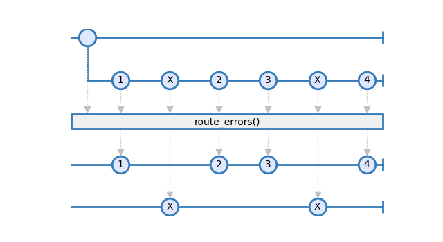
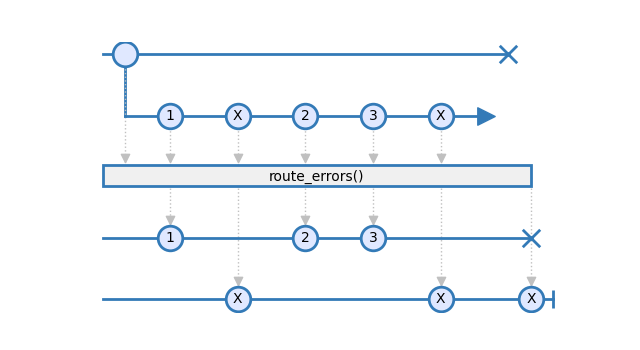
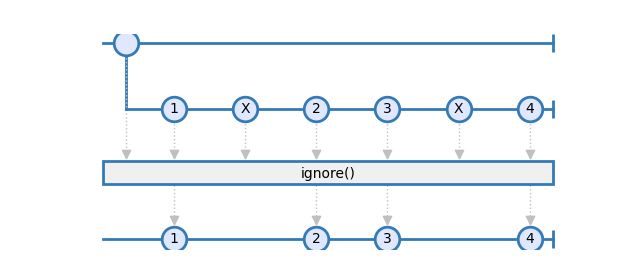
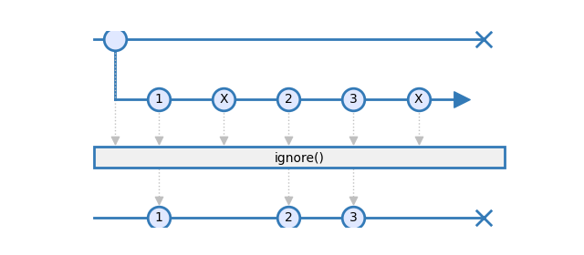
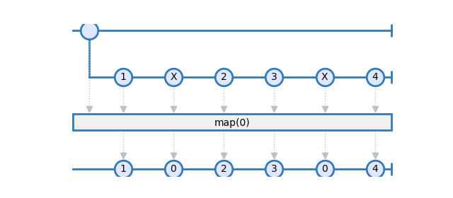
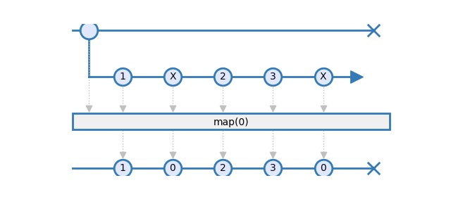

Error Operators
- rxsci.error.create_error_router()
Creates a route for mux errors
Errors on MuxObservables are not fatal. This error handler allows to route them to a dedicated Observable. This operator allows to implement a dead letter box observable or other kinds of error monitoring.
The source must be a MuxObservable.

Errors at the Observable layer are still propagated downstream and stop the pipeline:

Examples
>>> errors, route_errors = rs.error.create_error_router() >>> data = rx.from_([1, 2, 0, 4]).pipe( >>> rs.ops.multiplex(rx.pipe( >>> rs.ops.map(lambda i: 1 / i), >>> route_errors(), >>> )) >>> )
- Returns:
A tuple of (Observable, function). Observable is the errors observable where all mux errors will be routed to. The function is an operator to used in a pipeline where errors are be routed to the errors observable.
- rxsci.error.ignore()
Ignores errors emitted on a Mux Observable
Mux errors emitted on the source observable are silently ignored.
The source must be a MuxObservable.

Errors at the Observable layer are still propagated downstream and stop the pipeline:

Examples
>>> data = rx.from_([1, 2, 0, 4]).pipe( >>> rs.ops.multiplex(rx.pipe( >>> rs.ops.map(lambda i: 1 / i), >>> rs.error.ignore(), >>> )) >>> )
- Returns:
A MuxObservable emitting all items of the source observable and dropping any incoming Mux Error.
- rxsci.error.map(mapper)
maps errors emitted on a Mux Observable and route the result on the item path.
The source must be a MuxObservable.

Errors at the Observable layer are still propagated downstream and stop the pipeline:

Examples
>>> data = rx.from_([1, 2, 0, 4]).pipe( >>> rs.ops.multiplex(rx.pipe( >>> rs.ops.map(lambda i: 1 / i), >>> rs.error.map(lambda e: 0), >>> )) >>> )
- Returns:
A MuxObservable emitting all items of the source observable and mapping incoming Mux Errors to items.